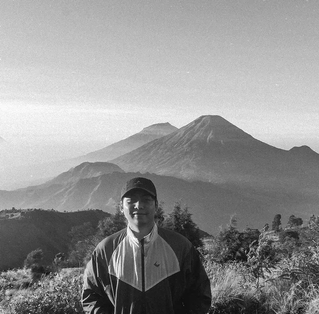

Golden Hour Sweats, Clear Head, & The Joy of Zone 2
After spending the whole day knee-deep in codebases, architecting distributed systems, and tracing elusive bugs that make your brain buzz, an evening run is hands down the most effective "cache flush" in existence.
Every weekend or right after clocking out on weekday evenings, I lace up my running shoes for a relaxed, easy-pace run. My go-to stomping grounds are typically around the running track at Thor Field or down Bogowonto in central Surabaya.
No manic speed goals, no heart rates pushed to the verge of blacking out — just a pure, meditative rhythm you can happily sustain while soaking in a podcast, grooving to favorite tunes, or just feeling the warm evening breeze of Surabaya.

Where It All Began: The Spark at Mount Lorokan
Every hiking journey has a starting line, and mine was this lush, scenic summit. Mount Lorokan, perched at 1,100 meters above sea level in Pacet, Mojokerto, is the very place where I took my first steps into the world of mountain trekking.
As a total beginner back then, emotions were running wild. Breaths grew heavy on the very first climb, calves caught fire, and my backpack felt twice its actual weight. But the split second I crested the open ridge and saw the vast green valleys of Pacet unfolding under crisp morning skies... all that exhaustion simply vanished into thin air.
There’s an unmatched feeling of accomplishment that money can't buy when your own two legs carry you to a summit. Standing on Lorokan's peak, a burning curiosity to explore higher peaks was permanently unlocked.

The Majesty of Dieng: Golden Dawn & Twin Volcanoes
If you ask me about the most awe-inspiring mountain panorama I've ever set foot upon, the answer without hesitation is Mount Prau via Patak Banteng in Central Java. Summiting Prau had been living at the top of my dream bucket list for years.
While the trail ascends relentlessly right out of Patak Banteng basecamp, all the sweat pays off tenfold the moment dawn cracks across the 2,565 MASL plateau. Golden rays cascade over an endless ocean of rolling white clouds beneath your boots.
And the crown jewel: right before your eyes stand two iconic giant cones — Mount Sindoro and Mount Sumbing — sitting side-by-side in flawless symmetry. Sipping freshly brewed hot coffee on Prau's rolling Teletubbies hills while watching that golden drama unfold is a moment of pure bliss.

Mental Grit on the Tretes Trail & The Peace of Lembah Kidang
Mount Arjuno-Welirang via Tretes was easily the most physically taxing and mentally grueling trail I have ever tackled. The route is notoriously long, riddled with unforgiving cobblestones, brutally steep, and tests your endurance at every single kilometer.
This photo was taken while catching my breath on a large boulder on the outskirts of Lembah Kidang — widely regarded as one of the most serene and enchanting alpine savannas in East Java. Surrounded by towering mountain pines and drifting alpine mist, the atmosphere felt deeply surreal.
During this trek, my physical reserves were pushed to the absolute redline, leading to a crucial judgment call: to gracefully abort the summit push for safety. Disappointed? Maybe a tiny bit initially, but the mountain always teaches you humility before ego. Turning around when conditions require it is wisdom, not failure. And the mountain isn't going anywhere: next year, I'm coming back for the rematch to reach the peak of Ogal-Agil!